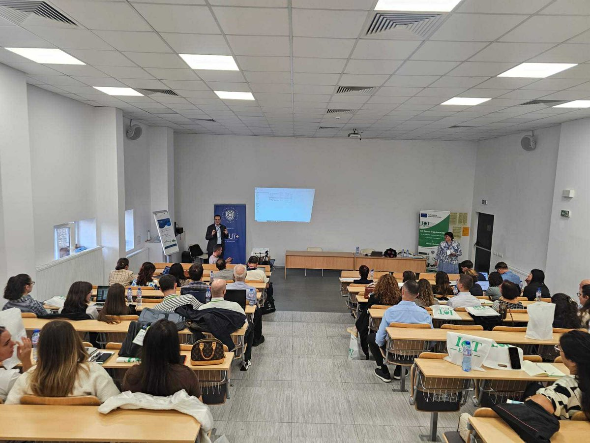

Programi Master në UBT është i dizajnuar për të përgatitur studentë me njohuri të avancuara akademike dhe aftësi praktike, të cilat u përgjigjen kërkesave të tregut modern të punës dhe zhvillimeve bashkëkohore në fushën përkatëse. Ky program ofron një kombinim të balancuar ndërmjet teorisë, kërkimit shkencor dhe aplikimit praktik.
Studentët përfitojnë nga staf akademik i kualifikuar, infrastrukturë moderne, si dhe qasje në projekte reale, punë praktike dhe bashkëpunime me industri dhe institucione vendore e ndërkombëtare. Programi Master në UBT synon zhvillimin e mendimit kritik, aftësive analitike dhe kompetencave profesionale që i përgatisin studentët për role udhëheqëse, kërkim shkencor apo vazhdim të studimeve në nivel doktorature.
Me një kurrikulë të harmonizuar me standardet evropiane dhe me fokus në inovacion dhe teknologji, Masteri në UBT u ofron studentëve mundësi reale për zhvillim profesional dhe avancim në karrierë, si brenda vendit ashtu edhe në tregun ndërkombëtar.
Programet Master zgjasin zakonisht 1 deri në 2 vite dhe fokusohen në thellimin e njohurive profesionale, zhvillimin e aftësive analitike dhe kërkimit shkencor. Studentët angazhohen në projekte të avancuara, studime rastesh dhe punim diplome, duke u përgatitur për role udhëheqëse, specializim profesional ose vazhdim të studimeve në nivel doktorature.